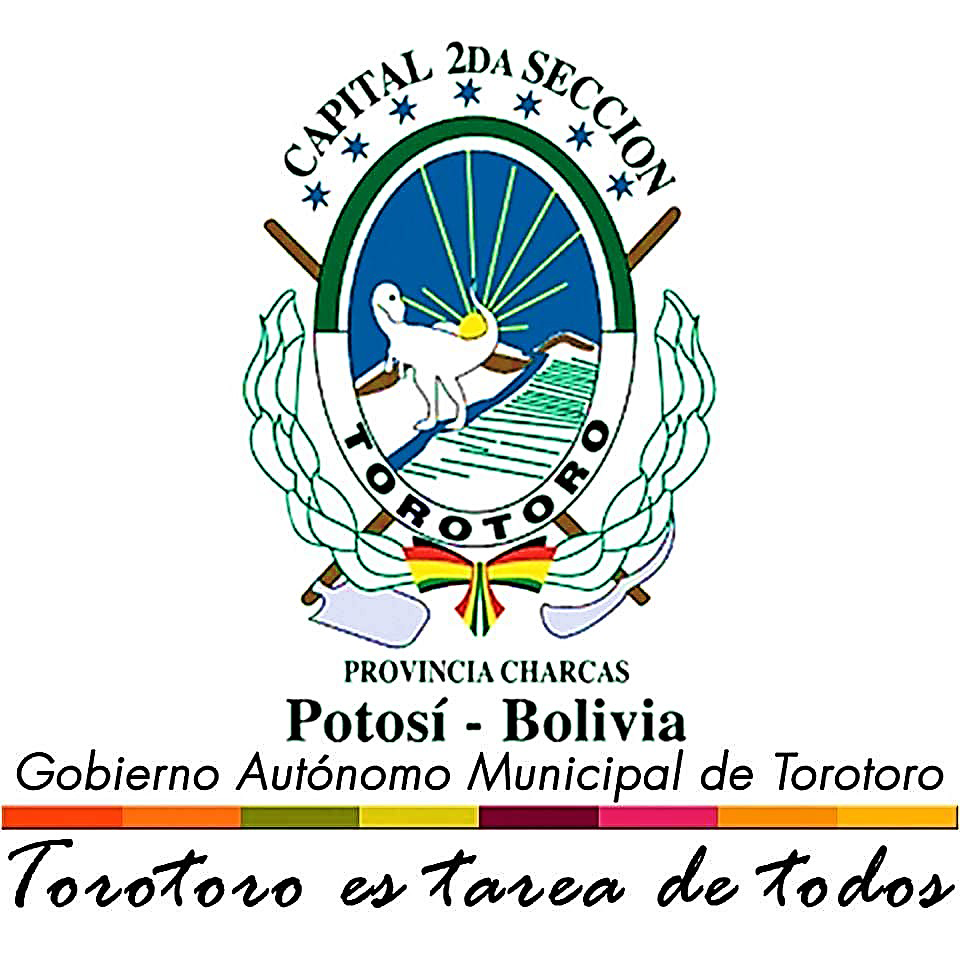
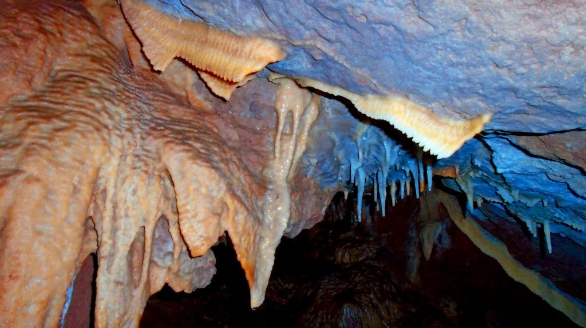
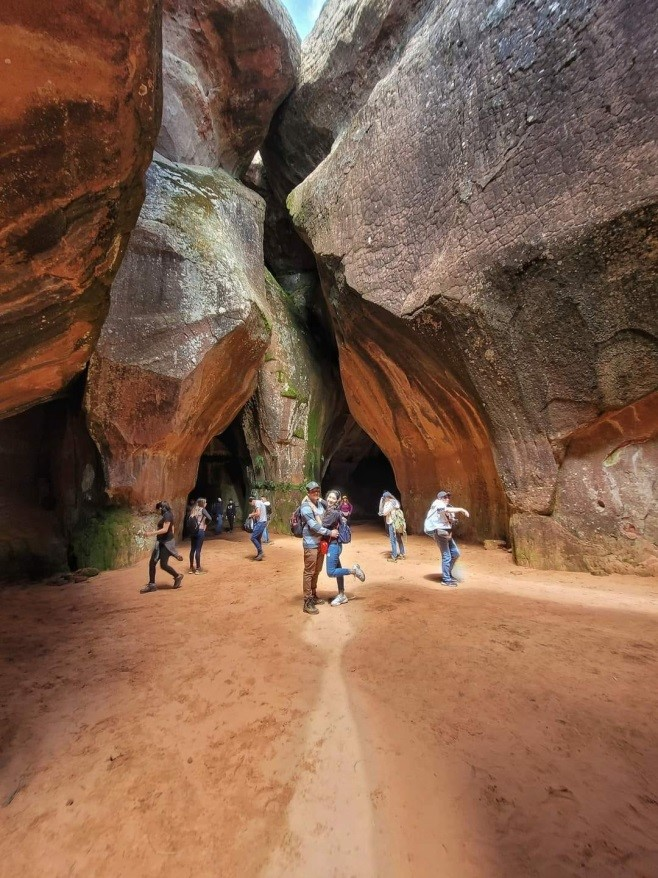
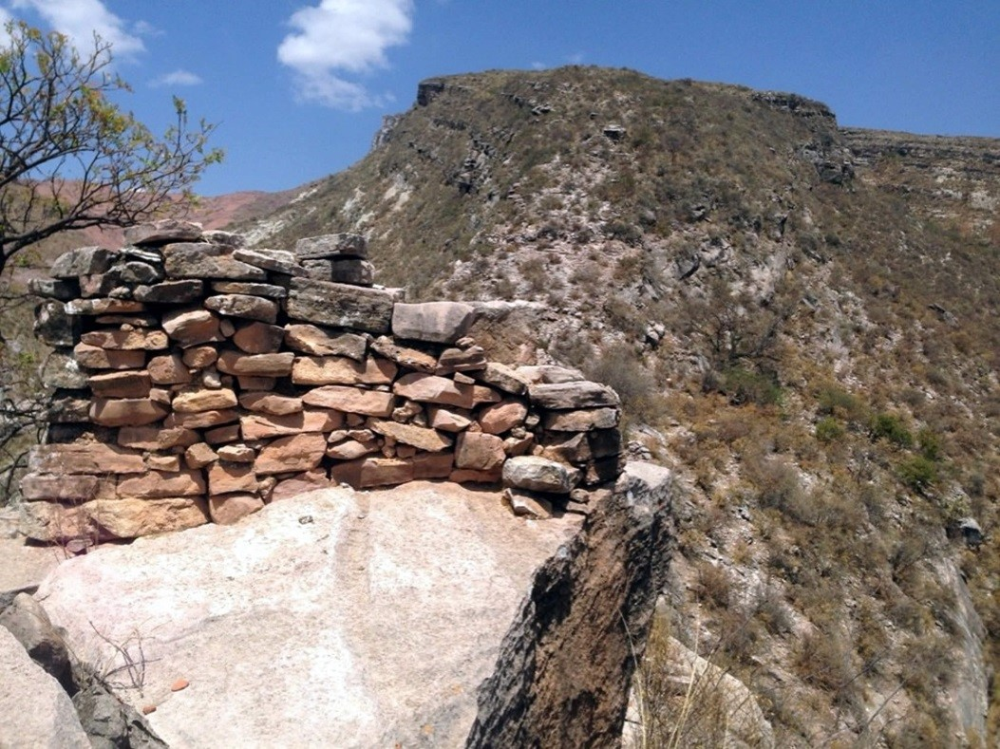
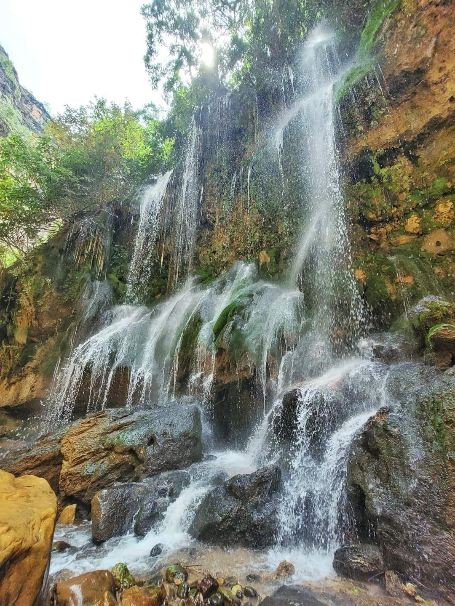
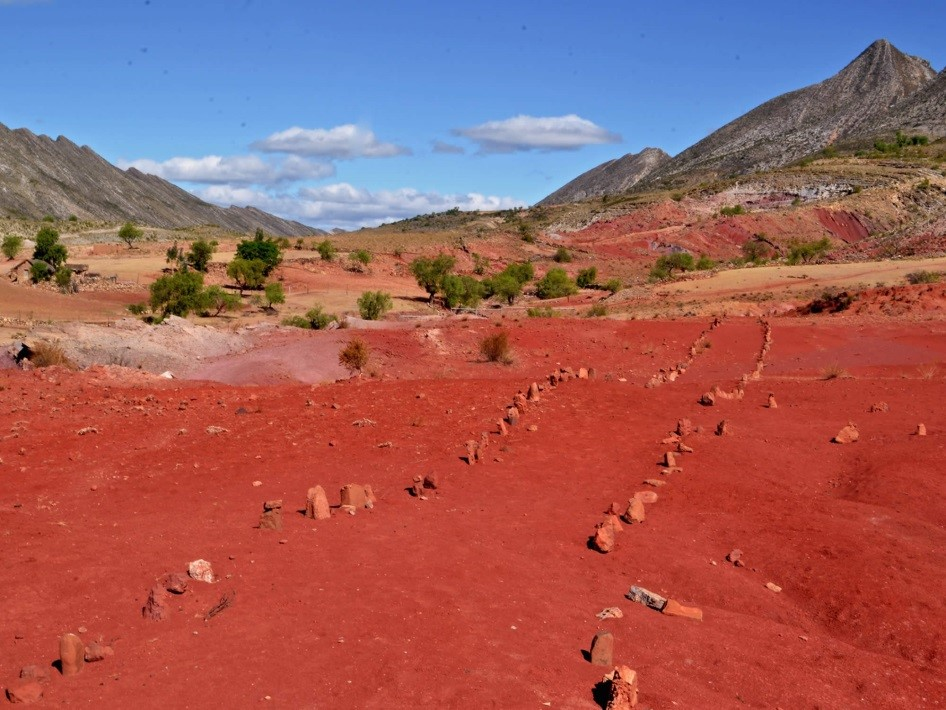
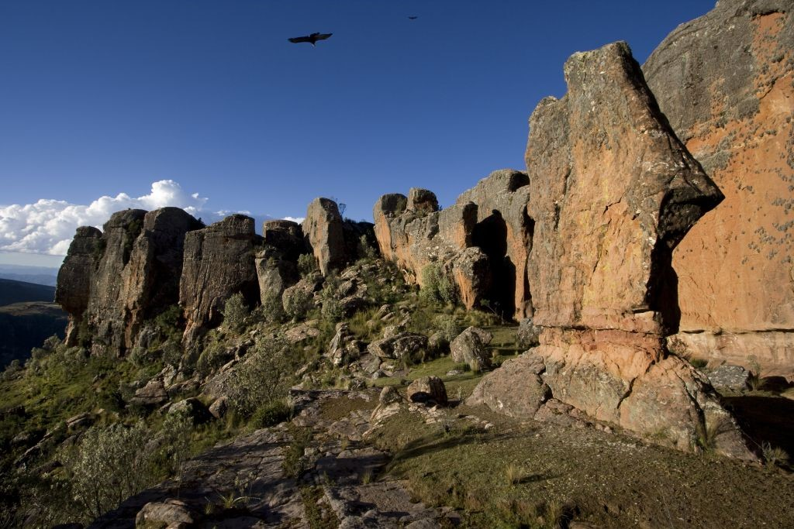
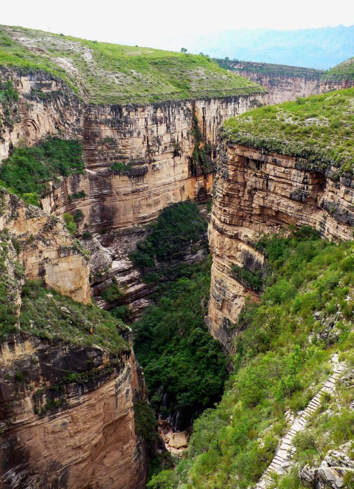
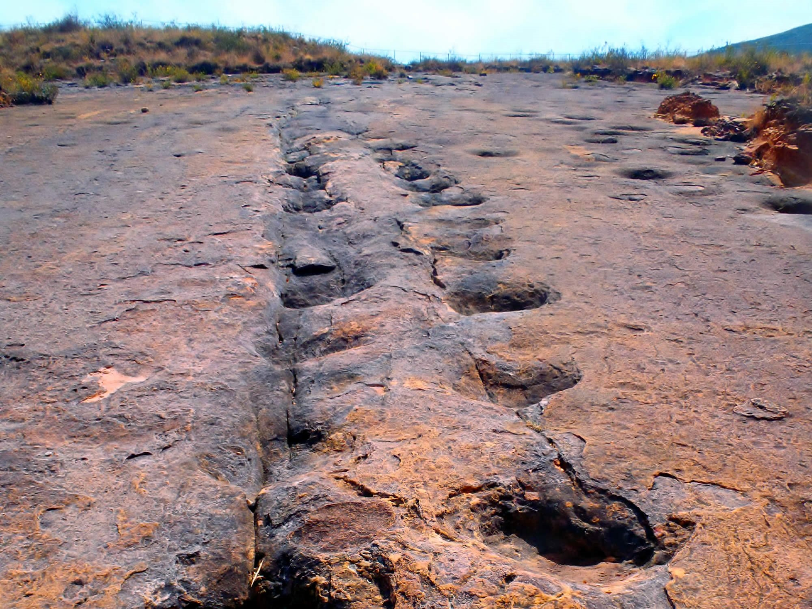

Conoce mas de Nosotros

1Misión
Formar profesionales técnicos de excelencia, con enfoque comunal e integral, brindar oportunidades de profesionalización a los habitantes de área rural y urbano del Norte de Potosí y el País, fortaleciendo sus competencias tecnológicas y recuperando sus saberes ancestrales locales, a fin de alcanzar el desarrollo sostenible.
2Visión
El Instituto Tecnológico Superior Charcas es una institución líder en la formación técnica y científica, haciendo constante y sostenible la mejora del proceso formativo para lograr profesionales competitivos y comprometidos con el desarrollo local y nacional.
Nuestros Lugares Turisticos


LA CAVERNA DE UMAJALANTA

CIUDAD DE ITAS

LLAMA CHAKI

EL VERGEL Y EL CAÑÓN DE TOROTORO

CEMENTERIO DE TORTUGAS

SIETE VUELTAS

EL CAÑÓN DE TORO TORO

HUELLAS DE DINOSAURIO